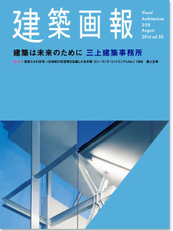

|

|
建築は未来のために
三上建築事務所
特集のお話はここ数年の間にいくつか頂いていました。そのすべてをお断りしてきました。ずっと機が熟していないと思っていましたが、（中略）発展途上の私たちが、この10年間に1冊分の紙面を埋める作品が残せたのだという思いがこみ上げてきました。（編集後記・三上建築事務所 所長 益子一彦 より）
Visual Architecture 358 August 2014 vol.50
建築画報358号
2014年8月29日発刊
本文112ページ
仕様 A4変形判
定価 3,300円（税込）
ISBN978-4-901772-80-8
|
|
|
建築画報 Vol.358 目次
002 嘉昌山祇園寺
010 建築は未来のために 1 益子一彦
014 PHASE1 原型 Basic
016 M-House
018 茨城県西農業共済組合
020 結城市民情報センター
024 神栖市立深芝小学校
026 稲敷市立桜川中学校
028 児童養護施設 チルドレンズホーム
030 筑西市立協和中学校
032 茨城県立水海道第一高等学校
034 茨城県立石岡第一高等学校
038 PHASE2 表層 Double Skin, Renovation
040 東京理科大学 大子研修センター
044 日立市立大久保中学校
046 柏市立風早南部小学校
048 茨城県立水戸第二高等学校
052 熊本大学付属図書館 中央館
054 常陽銀行 社員寮
056 PHASE3 端正 BOX
058 神栖市立深芝小学校 体育館
060 中川学園調理技術専門学校 製菓棟
062 茨城県警察本部 十王駅前交番
064 パルシステム茨城 みとセンター
068 岩手大学 総合教育研究棟
070 堀川保育園
074 高須病院
076 対談 堀内広治 × 益子一彦
080 PHASE4 屋根 Roof + Japanese
082 女性・子どもセンター
086 置戸町生涯学習情報センター
088 潮来市立図書館
090 常陽銀行 筑波支店
092 特別養護老人ホーム 鉾田サンハウス
094 パルシステム茨城 つちうらセンター 活動施設「スマイルパル」
096 常陸大宮市立大宮中学校 武道場
098 茨城大学農学部 国際交流会館
100 豊後高田市立図書館
104 建築は未来のために2 益子一彦
110 Others
Volkswagen 牛久店／聖ステパノ教会塔／水戸市消防本部北消防署／大洗町幕末と明治の博物館 聖像殿／茨城町立明光中学校／高萩市営手綱住宅／鉄道博物館「てっぱく図書室」／石岡市立八郷中学校 武道場／石岡市立八郷中学校／茨城日産自動車株式会社 鹿嶋店／JA北つくば アグリパーク筑西／東海村立図書館／鹿児島吉野グループホーム ひだまりの家／高萩市立松岡小学校／奥久慈茶の里公園 和紙人形美術館 山岡草常設館／中川学園 クッキンクラブ／県営平和通りアパート・日立市子どもすくすくセンター／特別養護老人ホーム うみべの家
114 建築データ
120 事務所プロフィール
122 奥付
123 information
124 巨匠たちの住宅：20世紀の住空間を定義した名作群⑨ シーランチ・コンドミニアム no.1 1965 淵上正幸
128 Book review 川添善行「現代の名匠」